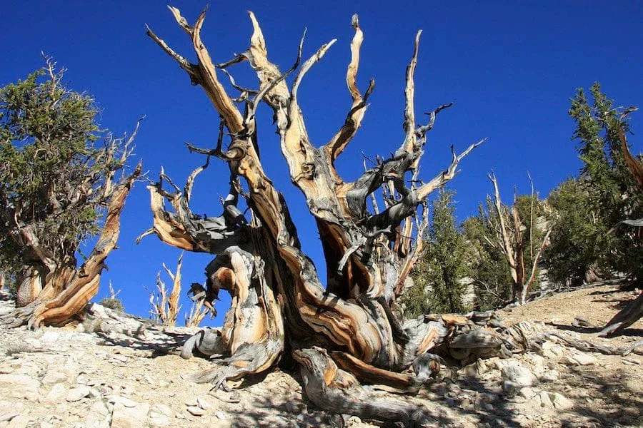
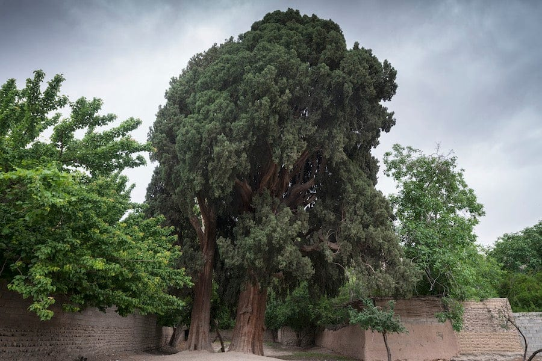
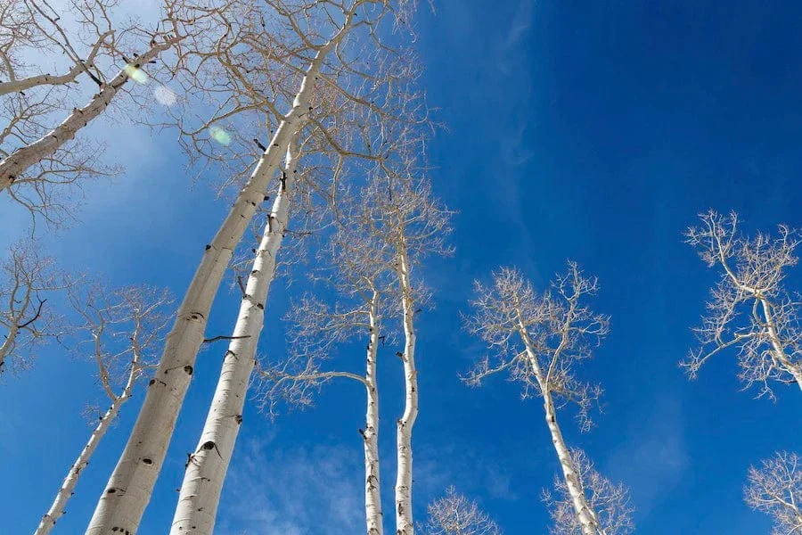

Oldest Trees in the World
|

The oldest individual tree in the world Methuselah tree:Methuselah tree Methuselah is a Great Basin bristlecone pine (pinus longaeva) that is estimated to be between 4,800-5,000 years old. Its exact location is kept secret for its safety, but it lies somewhere among the aptly named Ancient Bristlecone Pine Forest in the White Mountains of eastern California — part of the Inyo National Forest. Methuselah and other bristlecone pines are able to grow so old thanks to biological adaptations that have earned them a place in the scientific category of "extremophiles." |

The oldest tree in Asia: Cypress of Abarqu (Sarv-e Abarkuh):The "Cypress of Abarqu" is an ancient cyprus tree (Cupressus sempervirens) that is located in the Iranian city of Abarkuh and is estimated to be over 4,000 years old. This would likely make it the oldest tree in Asia. Cyprus is a particularly notable tree species in Iranian history and culture, and appears in Iranian poetry and carvings in Persepolis, the capital of the ancient Achaemenid Empire. The origins of the tree, also known as the "Zoroastrian Sarv", remain uncertain. An ancient figure, the Cypress of Abarqu rises above many others to make it onto our list of the oldest trees in the world. |

The world's oldest clonal tree: Pando:Pando, also known as the "Trembling Giant", is a clonal colony of quaking aspen (Populus tremuloides) that spans 106 acres of Southern Utah's Fishlake National Forest. What is clonal colony? Unlike the other entries on this list, Pando is not one singular trunk with branches, but instead many biologically identical trunks with a shared root system.At first glance, Pando's approximately 47,000 aboveground stems appear to be individual trees. Amazingly, each one is a genetically identical part of the same tree, connected by a vast underlying root system that weighs about 13 million pounds. That makes it one of the largest and heaviest land organisms on the planet. |